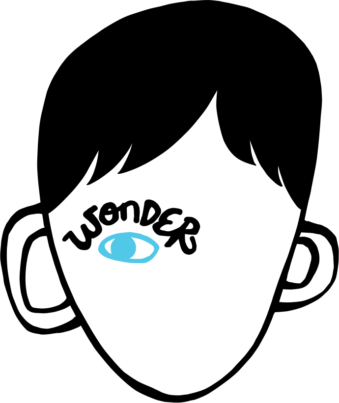

- 
- Bullying Poetry
- Bullying Information
- Wonder Movie Transformations
- Poetry
- Information
- Wonder
LUCAS BUBNER - Year 9 English - Skill 4 - Film Transformation
LUCAS - Film Transformation
LUCAS BUBNER - Year 9 English - Skill 4 - Film Transformation
LUCAS - Film Transformation
Movie to Poem Transformation
Transforming the primary theme of Wonder into a new innovative media
WONDER FILM
| Purpose | The purpose of Wonder is to inform the audience of the effects of bullying and how there are many stories under people’s eyes that change how we act, especially when we can be completely different people inside. |
|---|---|
| Context | Wonder was created to show the backstory of our current day society and how our new moralities in the current century have gotten to the point where the public should be notified about what happens in the real world. |
| Audience | Wonder is targeted at the people who think they are different or misrepresented to help them understand they are accepted in society, or at younger audiences to adjust their mindsets on the differences in our society - to accept everyone for who they are and to stop discrimination. |
| Importance | The key messages of bullying and relationships in this film are essential to the target audience to inform about the adverse effects of bullying and to promote positive relationships. |
| Stylistic Features |
|
| Similarities | The same premises of utilising multiple point-of-views are mutual among the film and my poems, while applying an extremely deeper philosophical meaning underneath my poems specifically. |
| Differences | The target audience for my poems are not aimed at the original intended audience for Wonder, but are instead aimed towards philosophy and deeper meaning text audiences. In addition, my poems imply a different importance, where Wonder was focused on bullying and relationships, while my transformation is based upon bullying and society. |
BULLYING POETRY
| Purpose | My poems have the purpose to educate, inform, and speculatively discuss the impacts of bullying from the perspectives of a victim, the connective relations to the victim, and an external observer, connecting the concept of bullyng to our contemporary society. |
|---|---|
| Context | The context of my poetry depicts our modern-day culture comparable to the original film, Wonder, yet, it provides an allusive and unknown component to the deeper philosophical meaning. It dives deeper into the constructs of society and the underlying implications beyond simply the foreground of bullying. |
| Audience | My poems are intended for those who have a strong intellect and are able to comprehend metaphors and more complex terms used in our everyday language. This person may be a reader of poetry, one of the outliers in a peaceful society, or someone who is drawn to complex literary works. |
| Importance | The key messages being pushed through my poems, comparable with Wonder, are about bullying and mental warfare. However, unlike Wonder, there is a deeper and hidden meaning in my poems that cannot be contrast with the film; the link between bullying and oncoming contemporary society. |
| Stylistic Features |
|
| Similarities | In order to give the audience a sense of what it would be like to see from a first-person perspective, comparable to the movie, I used the same techniques by swapping the primary point-of-view. Consequently, the victim and consequential witnesses are seen depicted similarly between the movie and my poems. |
| Differences | Although I have used straightforward language similar to Wonder, the terminology and metaphors in my poems are unlike those in the film since they all have deeper philosophical objectives, ones that are not present in Wonder. |